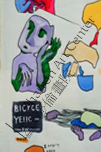

如何分清批评和中肯的建议？
7Olivia的父母来咨询女儿学画的情况，当我们给予仔细分析、正面肯定时，她的父亲表示怀疑：＂当老师的都会胡夸学生⋯＂我很愕然。什么时候，老师这个职业变得让人不能相信？
反之，当有人拿着孩子的画，来寻求评估咨询时，问了一些问题，老师给予回答时，家长却听不下去，当场变脸甚至暴跳如雷。我敬重的一位教育顾问也说，有人拿着孩子申请大学的论文给她看，她以她的角度给予改进建言时，父母很不悅：很多顾问专家都说很好，就你说不行？你以为你算老几？
有人劝我：＂要见刘老师一面可没那么容易⋯你又没收费，两句打发他走了，跟他讲那么多、那么认真干什么？＂而我想说：假广告、假新闻铺天盖地、假货横行，就是因为有顾客，有人吃那一套。但是，我也深知做家长的心情，没有人愿意听到＂刺耳＂的话，所以我已经十分＂含蓄＂了。
很多家长乘飞机来找我、一些家长从外州驱车长途到新州来找莎伦画院，就是想听到一句真话，孩子有什么不足，应该如果提高：＂这么多年，总觉得孩子的画有什么不对的地方，但问遍了专家、老师、画家朋友都说没问题，而今终于有一个人敢说实话，一针见血！＂我总觉得，大家都这么忙，不想浪费大家的时间，不说没有建设性的话。
周日一位妈妈带着不自信的9年级女儿来，给我看了她的小画本。我对之讚不绝口，并给予她意料不到的艺术与商业结合的细节与规划。大家都＂赞＂的孩子，画作流露的，一定有正确的基础和正确方向。一本脏兮兮的随手＂涂鸦＂画本，也可能传递了还不为人知的潜能与光明前途。
不要惊讶：在莎伦画院，什么都可能在众人的意料之外！
一般老师或专家有两种主要情况：
1．眼光不够锐利，自已都看不懂，搞不清楚状况。与是否科班背景？什么学校毕业无关。
2．不想讲实话。怕惹毛家长，学生会跑掉。
当你想找老师、专家、顾问做咨询之前，先想清楚：你只是潜意识里，想多找一个＂专家＂来赞美、肯定你的孩子？还是真的想听到不足以及如何提高的建言？
（2015）